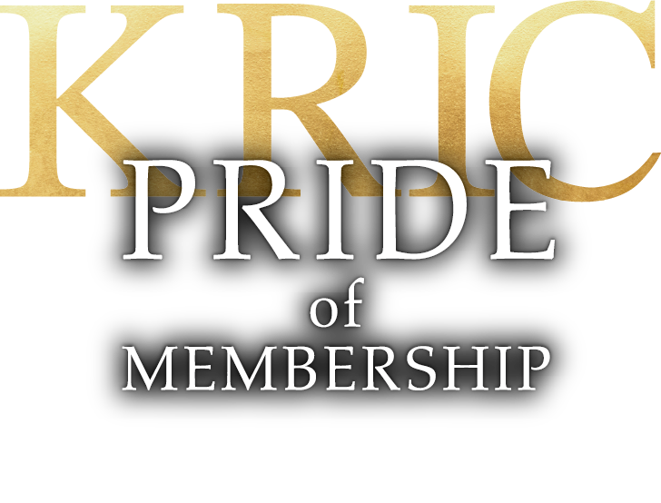

KRICについて

1969年設立以来、関西の不動産流通業界の合理化・近代化を図り、不動産取引の信頼性と安全性を確保する諸制度を実施し、世益に資することを目的に設立された団体です。関西一円の信託銀行・都市銀行・大手私鉄・商社・生保・建設会社などの直系不動産会社、そして由緒ある老舗など優良不動産業者を中心に信用と実績を誇る不動産会社で組織されております。『関西不動産情報センター』を英文で『Kansai Real estate Information Center』と表示し、略称をKRIC＝クリックと称します。

関西不動産情報センターは1969年の設立以来、「競い合うよりも、響き合うこと。」を精神に掲げ、関西の不動産流通の近代化と信頼性向上に努めてまいりました。銀行系列や大手電鉄、地域に根差した老舗など、多彩な会員企業がその垣根を越えて連携し、新たなビジネスチャンスを獲得してきました。実務に直結する研修会や実力アップ講座を定期的に開催するなど、会員のスキル向上にも注力しています。また、大阪・兵庫・京都の各部会や地区懇談会を通じた密な物件情報交換、質の高いノウハウを共有し、迅速かつ安全な共同仲介制度を構築しております。私たちは高度な専門知識の共有を通じて、お客様や地域社会の期待に応え、安心・安全な不動産取引を実現する社会的使命を担っています。これからも伝統を大切にしながら、時代の変化に応じた新たな価値を創造し、業界の健全な発展と共存共栄を目指してまいります。
KRIC理事長 田村 佳寛

JOIN
入会を
お考えの方は
こちら
CONTACT
KRICについてのご質問やご相談は
お気軽にお問い合わせください。